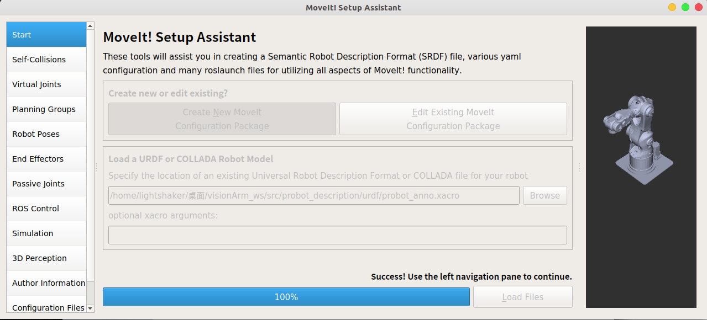
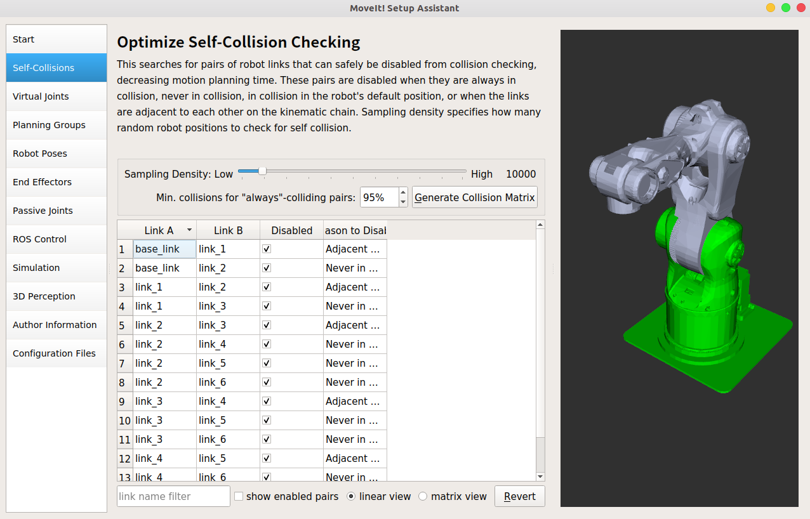
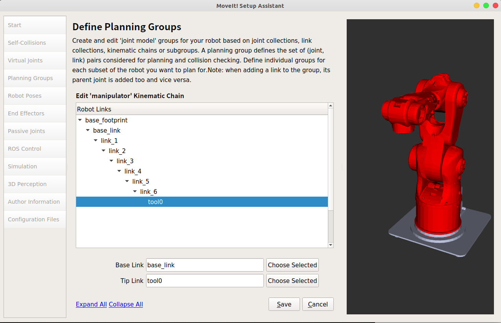
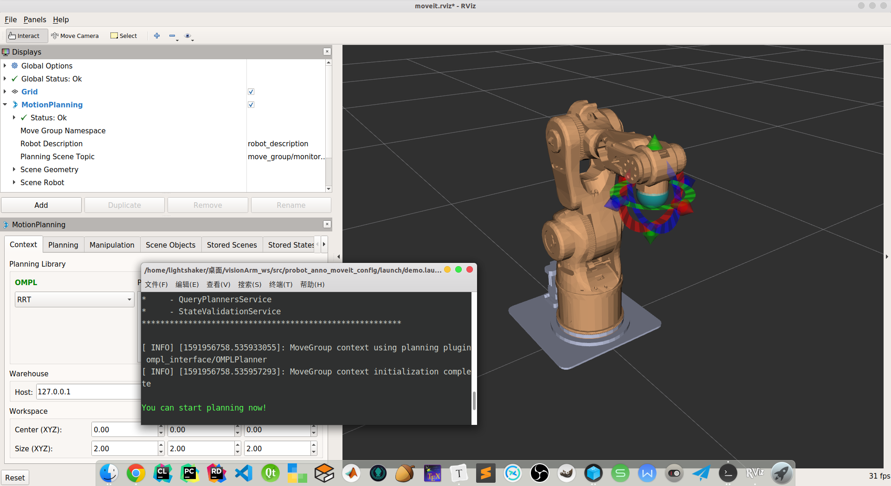
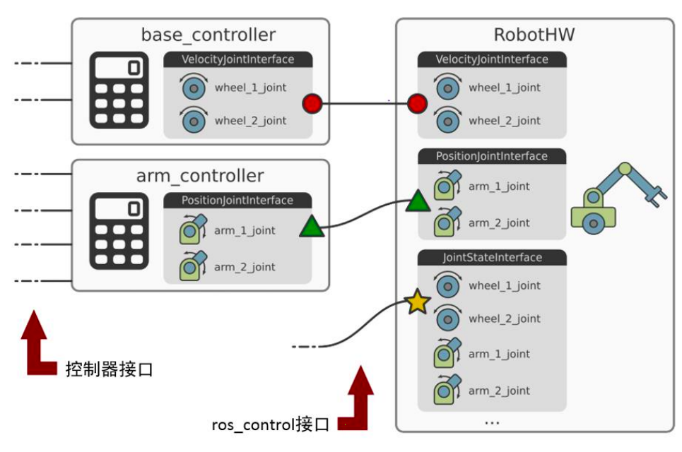
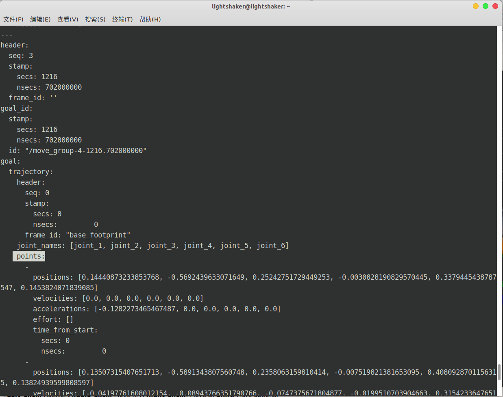
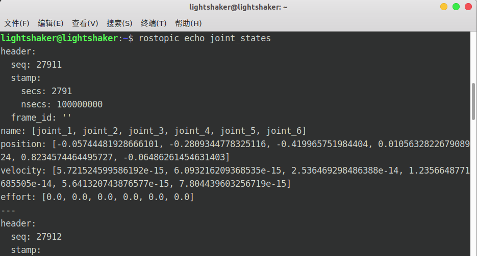
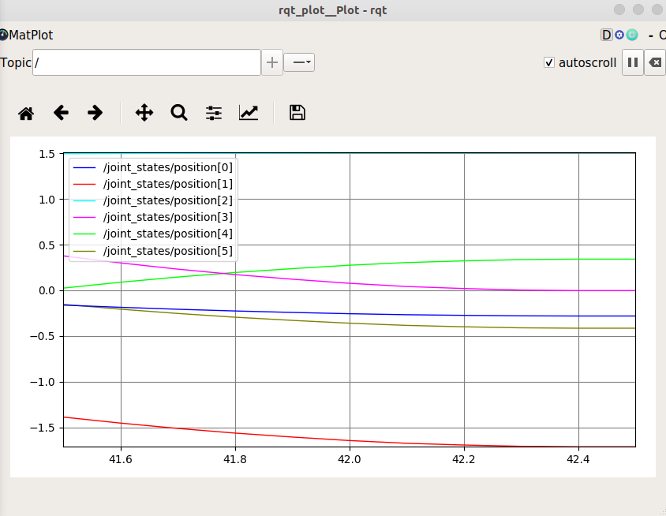

本文的核心内容为使用机械手xacro模型文件配置gazebo+moveit仿真环境
学习资料来源：古月居 https://www.guyuehome.com/
从xacro模型文件搭建Moveit!+Gazebo仿真系统
使用Moveit生成机械臂的配置文件
创建工作空间并将下载的probot_anno机械臂description文件拷贝至src路径下，编译并添加环境变量
1 | mkdir -p visionArm_ws/src |
打开moveit_setup_assistant，导入anno机械臂的xacro模型文件，进行配置
1 | roscore # 终端一 |
配置方式如下：
- Start：点击
Create_New_Moveit Configration Package->Browse导入anno机械臂的xacro模型文件，点击Load Files加载模型，加载完成后右侧将出现该模型的预览。

- Self-Collisions：这一步生成机械臂自碰撞免检矩阵，目的是在运动规划时剔除判定为“不会碰撞”的关节对的碰撞检查运算，节省消耗的资源。其中潜在碰撞点的采样密度Sampling
Density默认为10000，判定为“总是碰撞对”的概率阈值为95%。点击
Generate Collision Matrix生成矩阵，每一行表示连杆A与连杆B为“不可能碰撞对”，原因在最后一列中给出，例如 "Adjacent Links"表示相邻连杆不可能碰撞，"Never in Collision"则表示经过概率筛选得出不可碰撞的结论。

- Virtual Joints：配置虚拟关节。它的作用是描述机械臂的极坐标系与外界的世界坐标系之间的位置关系，因此只有在机械臂的底盘不与世界坐标系重合时（比如在gazebo中将机械臂置于桌面上）需要配置，本例中由于Anno机械臂是置于地面上的，与世界系重合，因此该步可跳过。
- Planning
Groups：规划组。即将机器人的某几个关节作为联合体，在进行运动规划时将这个整体作为考虑的对象，在6关节机械臂中，显然规划运动需要将6个关节作为整体，因此添加6个关节为一个规划组。点击
Add Group，组名起为"manipulator"（可任意），运动学求解器Kinematic Solver选择kdl_kinematics_plugin/KDLKinematicsPlugin，参数默认即可，另外，OMPL Planning（运动规划）算法选择RRT算法（边搜索边采样建图），再点击Add Kin.Chain添加运动学求解链，将基座base_link与Base Link匹配，虚拟末端连杆tool0与Tip Link匹配，用于生成末端坐标系，便于之后装上夹具。点击


- Robot Poses：添加机械臂的姿态，便于之后编程或者通过rviz图形化界面进行规划时可直接使用该姿态作为初始姿态或目标姿态。我们这里添加原始姿态"home"以及前屈姿态"forward"。

- End
Effectors：添加末端夹具，点击
Add End Effector，起个名，选择所属规划组、父连杆与父规划组即可，这里先不添加。 - Passive Joints：设置消极关节，意思是在进行运动规划时不需要考虑的关节，在本例中6个关节是一个规划组，所以此处不需要设置。
- Ros Control：配置控制文件，不建议在此配置，通过工程文件配置较为稳定。
- Simulation：产生可供Gazebo使用的机械臂urdf模型文件，同样不建议在此处配置。
- 3D Perception：3D感知，即有安装RGB摄像头或者其他传感器时可选择输出的数据类型为点云或者深度图，同时设置话题名，配置完成后moveit会自动订阅话题，加载外部场景，由于暂时没有配置相机，因此此处先跳过。
- Author Information：填写个人信息。
- Configuration
Files：设置要保存的配置文件以及保存路径，点击
Browse，在我们创建的工作空间下的src路径下新建文件夹probot_anno_moveit_config，选择该文件夹，点击Generate Package即可生成。出现未完整配置的提示点击OK即可。生成完毕后可在对应路径下看到配置文件夹probot_anno_moveit_config，其中子目录config内包含了刚刚配置的各种参数。


编译并运行配置文件夹中的demo.launch文件查看效果：
1 | roscore # 终端一 |

通过拖动机械臂末端的球可以改变机械臂的位置，拖动蓝绿红三个圈可以改变机械臂的姿态，当确定一个姿态后，可在左侧Planning一栏中点击Plan按钮规划从当前位姿到指定位姿的运动，可以看见模拟此次运动规划的透明灰色机械臂，但此时实际的机械臂并没有动，可在左侧点击Add，添加Robot Model显示机械臂当前所处的实际状态，再点击Execute就可让实际的机械臂按照刚刚模拟的轨迹运动。另外，也可更改机械臂的运动速度和加速度值，对应Planning
- Options中的Velocity Scaling和Acceleration
Scalling，也可以通过Query一栏中选定已设定的姿态（配置时的Robot
Pose）来进行规划。

Gazebo搭建ROS仿真环境
相关概念简介
what is ros_control？
- ROS为开发者提供的机器人控制中间件。
- 包含一系列控制器接口、传动装置接口、硬件接口、控制器工具箱等等。
- 可以帮助机器人应用功能包快速落地，提高开发效率。

图中的一些模块的含义：
- Controller
Manager：控制中心，管理控制器与监视器，管理方式例如list，load，unload，switch等
- joint_state_publisher：监视器，负责从硬件抽象层接受反馈信号。
- joint_trajectory_controller：关节轨迹控制器，使用PID控制算法发布控制信号至硬件抽象层。
- Hardware Resource Interface Layer：硬件抽象层，控制层与硬件资源之间的数据中转站，负责转换普通数据为ROS通讯数据（msg, srv等等），以及传输数据。
- Simulation-Gazebo：Gazebo作为硬件仿真器，由仿真硬件接口中心通过读和写的方式控制
- DefaultRobotHWSim：介于ros_control与Gazebo之间提供速度、位置和力矩接口的仿真接口中心
- Effort Transmissions：力传动装置，接受硬件抽象层封装的数据并转化为力矩等具体控制数据。
- Joint Limits：执行一些关节限制条件，例如碰撞检测，防止模型崩溃，检测后通过接口中心调用将控制力矩写入Gazebo，控制仿真机器人运动。
- Forward State Transmission：通过接口中心实时读取仿真运动的控制反馈数据，并传递回硬件抽象层
- Hardware-Reality：实体机器人
- RobotHW：介于ros_control与Gazebo之间提供速度、位置和力矩接口默认的实体硬件接口中心
- Embedded Controller：实体电机上的嵌入式控制板卡，接受Joint Limits的力矩数据，转化为电压信号，通过硬件接口中心发送至执行机构Actuators。
- Actuators：伺服电机或其他驱动器，按照嵌入式板卡发送的电压数据驱动实体机器人运动
- Encoders：编码器，位于执行机构上，实时读取机器人的关节运动状态，由Forward State Transmission通过硬件接口中心读取并反馈至硬件抽象层。
ROS常用控制器：
- joint_velocity_controller：速度控制器
- joint_position_controller：位置控制器
- joint_effort_controller：力控制器
- joint_state_controller：监控机器人运行状态的模块（接收和处理控制过程的产生的信息），与控制过程无关

ROS中的控制器插件
- 控制器管理器：Controller Manager，提供一种通用的接口来管理所有控制器，此处的管理指的就是统筹各个控制器的开关以及各种参数和输入输出等等。
- 控制器：Controller，读取硬件状态，发布控制命令至Gazebo（仿真）/硬件抽象层（实体），控制实体机器人的话硬件抽象层还会将数据发送给具体的硬件部位，例如小车车轮上的嵌入式板卡，再由该开发板根据控制方式发送电压信号给驱动电机（执行机构），实现对具体关节的控制，并且在机器人运动过程中，电机上装载的编码器将监控电机的转速并将其反馈至硬件抽象层，进行封装后再经由interface接口发送至控制层的joint_state_controller，形成完整的闭环控制。
- 硬件资源：为上下两层提供硬件资源的接口
- 机器人硬件抽象：与机器人硬件资源直接想通，通过write和read的方式完成硬件操作
- 机器人硬件：执行接收到的命令
完善上一节创建的机器人模型
以文本形式打开~/visionArm/src/probot_description/urdf/probot_anno.xacro模型文件，修改配置
第一步：为每个link添加惯性参数和碰撞属性
一个link属性不可缺少三部分：惯性参数（inertial）、可视化属性（visual）和碰撞属性（collision），打开配置文件后发现属性的形式已经是完整的了，只需要改一些参数。
我们将连杆的质量<mass value="19.574"/>的值设置为0.00001，虽然与实际质量的差距可能较大，但能使模型在仿真的过程中更加稳定。另外，将惯性参数的ixx、iyy和izz均设置为10。
1 | <link name="link_1"> |
第二步：为每个joint添加传动装置
joint的作用显然是连接连个link，但link的运动方式有多种，例如平移、旋转等等，因此需要为joint添加传动装置以实现连杆的多种运动方式，传动装置一般就是电机和减速器的组合体，不可缺少。
利用宏为六个joint添加作为传动装置的电机和减速器
1 | <!-- Transmissions for ROS Control --> |
第三步：添加gazebo控制器插件
1 | <!-- ros_control plugin --> |
构建Moveit!+Gazebo联合仿真
MoveIt!机器人控制框架

其中各个模块的功能如下：
- Moveit!模块：运动学+路径规划+碰撞检测
- 输入：通过可视化控制界面Rviz发布的指令，或包含控制指令的C++、Python源代码
- 输出：关节空间运动轨迹数据，由多个路径点组成，单点的数据由各个轴的位置、速度、加速度组合描述
- Follow Joint Trajectory：将Moveit!模块输出的数据封装成具体的通讯机制（话题、服务等）
- Trajectory
Controller：机器人控制器（仿真/实体），包含上文所说的控制中心、控制器与硬件抽象层
- 输入：经过格式转换的Moveit!模块输出路径点数据
- 控制特点
- 线性样条：位置连续，速度、加速度不连续
- 三次样条：位置和速度连续，加速度不连续
- 五次样条：位置、速度、加速度都连续（ROS默认的插补方式）
- Trajectory Interpolation：轨迹插补，输入的轨迹由于路径点之间存在时间差而整体较粗糙，通过在路径点的时间差内进行插补的方式，可以细化整个轨迹（简单地说就是增大路径点密度）
- Position Servo：位置伺服，通过分析插补后的轨迹，确定下一时刻的机器人的位姿，并产生控制机器人各个驱动电机的电压信号，属于硬件抽象层。
- 输出：驱动机器人各个电机的电压信号
- Robot Body：机器人本体（仿真/实体），6个电机（Ｍ）根据伺服信号驱动机器人运动，并通过伺服电机上的编码器实时反馈数据。
- Joint State Controller：控制层的监控模块，接受并处理反馈信号
首先添加功能包probot_gazebo，编写launch文件probot_anno_gazebo_world.launch，内容如下
1 | <launch> |
运行查看机械臂模型在gazebo中是否显示正常
1 | cd ~/visionArm_ws |

显示正常，说明模型没有问题，但此时模型还不能运动，因为我们还没有配置gazebo中的控制器，也就暂时无法接受和处理Moveit发送的轨迹路径点数据。对应的控制器就是Moveit!机器人控制框架中Gazebo部分的Trajectory Controller与Joint State Controller。另外，在配置完Gazebo控制器后还需要配置Moveit中的Follow Joint Trajectory控制器，才可完成Moveit!与Gazebo的通讯。
配置Gazebo控制器
首先配置关节轨迹控制器（轨迹插补）Trajectory Controller
在新创建的功能包probot_gazebo/config路径下新建配置文件probot_anno_trajectory_control.yaml，配置内容如下，内容含义为明确控制器接受数据的对象是哪几个关节，注意这里的6个关节名要与原xacro模型文件中的关节名一致，gains表示每个关节在做闭环PID控制时的参数，此处设置了一个默认值，在之后的调试中若要提高控制精度，需要改动这些pid参数。
1 | probot_anno: |
之后我们需要创建一个新的launch文件，用于加载这个控制器，这里命名为probot_anno_trajectory_controller.launch，内容如下，大致意义为加载上面的yaml文件，并通过启动已有的节点spawner来启动控制器节点arm_controller_spawner，节点名与yaml中的控制器名对应。
1 | <launch> |
然后配置关节状态控制器Joint State Controller
同样在probot_gazebo/config路径下创建配置文件probot_anno_gazebo_joint_states.yaml，内容如下，意义为按照50hz的频率反馈信息。
1 | probot_anno: |
创建launch文件probot_anno_gazebo_states.launch用于启动该控制器，内容如下
1 | <launch> |
配置Moveit!控制器
刚刚配置的是Gazebo环境中的关节轨迹控制器与关节状态控制器，现在要配置的是Moveit!的控制器Follow Joint Trajectory，作用是转换Moveit!的轨迹路径点数据为ROS通讯数据。
在Moviet生成的配置包的配置目录probot_anno_moveit_config/config下创建配置文件controllers_gazebo.yaml，添加以下内容：
1 | controller_manager_ns: controller_manager |
在/launch路径中打开moveit控制器启动文件probot_anno_moveit_controller_manager.launch.xml，按照下面的内容修改，添加读取Moveit仿真控制器配置文件的内容。
1 | <launch> |
完成之后需要另外创建一个launch文件moveit_planning_execution.launch，以同时启动原有的两个moveit相关的launch文件move_group.launch与moveit_rviz.launch，并且启动关节状态发布器节点joint_state_publisher
1 | <launch> |
最后，我们在probot_gazebo/launch路径下再创建一个launch文件probot_anno_bringup_moveit.launch，用于同时启动刚刚完成配置的三个控制器（Gazebo关节轨迹控制器，Gazebo关节状态控制器，Moveit!控制器），并启动刚刚创建的moveit_planning_execution.launch
1 | <launch> |
试运行仿真并查看数据
配置完成后，执行roslaunch命令运行总的launch文件查看效果
1 | roslaunch probot_gazebo probot_anno_bringup_moveit.launch |
发现报错：unused args [config] for include of xxx/moveit_rviz.launch
打开probot_anno_moveit_config/launch/moveit_rviz.launch文件，进行如下修改
1 | <!-- 原文件内容 --> |
再次执行launch命令，这回正常了，同时启动了gazebo与rviz

现在，我们可以拖动rviz中机械臂末端的球体设定目标位姿，点击Planning中的Plan and Execute，观察到rviz和gazebo中的机械臂均按照规划的轨迹运动并且二者的位姿时刻保持一致，至此基础环境配置部分完成。

为了查询关节空间轨迹规划的数据信息，我们执行rostopic list，找到以probot_anno开头topic：

其中的/goal就是我们需要的目标轨迹话题，我们使用rostopic echo指令输出它的内容：
1 | rostopic echo /probot_anno/arm_joint_controller/follow_joint_trajectory/goal |
发现提示没有输出内容 "no messages received and simulated time is active"，我们需要让机器人动起来才有规划的数据，因此随便在rviz中规划一次运动，再执行一次查看数据：

其中header与goal_id是本次规划的标志信息，而goal里的points储存的就是本次规划的具体内容，可见一个路径点的数据由位置position、速度velocities、加速度accelerations、力矩effort以及时间戳time_from_start构成。这些数据将传输给Moveit控制器Follow
Joint
Trajectory，进行封装后再传递给Gazebo或实际的机器人控制器进行插补，最后传输给驱动装置控制机器人运动。
另外，可以用rqt_plot可以查看各个关节在本次规划中的运动轨迹（属于关节空间），在上一步的rostopic list中可查找到名为joint_states的话题，我们输出这个话题的内容：
1 | rostopic echo joint_states |

可见话题内的数据为不同时刻下的各个关节的位置、速度以及力的数值。我们直接使用rqt_plot输出各个关节的位置曲线看看（需要进行一次任意规划才有曲线，否则位置不变一直会是直线）：
1 | rqt_plot joint_states/position[0]:position[1]:position[2]:position[3]:position[4]:position[5] |
